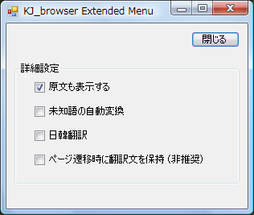

あまり有用ではありませんが、現在、以下の設定ができます。
(1) 原文も表示する （デフォルト チェック済み）
デフォルトでは原文と翻訳文を併記します。
翻訳文だけにしたい場合は
「原文も表示する」 のチェックを外して下さい。
(2) 未知語の自動変換
未知の語に対し、ハングル・カタカナ変換を自動でかけます。
未知の外来語が多い文章で効果が出る事もありますが通常ははずした方が良いです。
(3) 日韓翻訳
翻訳方向はデフォルトで韓国語→日本語に固定していますが、
これを逆方向にします。
（でもこの日韓翻訳はほとんど使えません。韓日翻訳を主体にデータを調整しているためです。あしからず）
(4) ページ遷移時に翻訳文を保持 (非推奨)
ページを戻った場合、翻訳済みのページであれば翻訳文も出します。
ただしJavascriptがあるページだとエラーが発生します。そのため非推奨です。
（対策調査中...）
[閉じる] ボタンでダイアログを閉じますが、閉じなくても翻訳機能は使用できます。
(設定はチェック時、即時本体側へ反映されます)